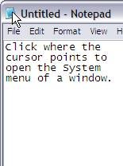
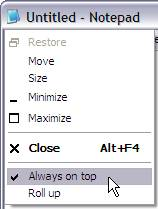

This tab lets you set "hot keys" to open your Favorites menu and the Recent menu. Many folks prefer to use the keyboard rather than the mouse when navigating Windows, and we think this is a great idea (as well as faster when you're typing and need to quickly load a file, grab some text from it, and then go back to a document).
Open favorites menu
click in this box and then press the keystroke (or combination) you'd like to use to access this menu when a dialog box or Explorer window is the current window.
Open recent menu
click in this box and then press the keystroke (or combination) you'd like to use to access this menu when a dialog box or Explorer window is the current window.
 It's probably obvious, but the key you select shouldn't be one used by Windows or Explorer. Try combinations that use high FKEY (function keys) buttons in concert with other keys. You may have to experiment to find a combination you like that is also not used by another program or Windows itself.
It's probably obvious, but the key you select shouldn't be one used by Windows or Explorer. Try combinations that use high FKEY (function keys) buttons in concert with other keys. You may have to experiment to find a combination you like that is also not used by another program or Windows itself.
Add underscored numbers to Recent menu items for easy access
when enabled, allows you to quickly load recent items from 0-9 by typing that numerical key. This makes quick "jumps" to an item higher on the list much easier, and also removes the need to grab the mouse.
Display full path on the “Recent” menu
this causes FileBox to show the complete location of a folder on the Recent menu. For example, when enabled, a folder called "Upload" under another folder on your C: drive would be displayed as c:\other folder\upload rather than just upload (C:). If you have many folders with the same (or similar) names, you may find this feature useful to make it easier to discern which are which.
Sort "Recent" menu alphabetically
if turned on, will show the Recent menu in alphabetical order. If turned off, the items on that menu will appear in the order they were accessed, with the most recently accessed folders on top of the menu.
Add "Always on top" command to a window system menu
adds Always on top item to the system menu of all application top level windows, accessed by a click on the small icon what is displayed on the left of the title bar – see the picture below.
 
System menu on a Notepad window with FbX items added.
Add "Roll up" command to a window system menu
adds Roll up item to the system menu of all application top level windows, accessed by a click on the small icon what is displayed on the left of the title bar – see the picture above.
Display … items on Recent Folders menu
you can define how many items to display on the recently-accessed item menu. A reasonable number will work best, something like 10 or 15. If you set this to a large number, the menu may get unwieldy. The maximum value is 32. Items are "aged out" of the list as you access more than the value assigned here, with the folder accessed the longest time ago being moved off the list first, and then the next, and so forth.